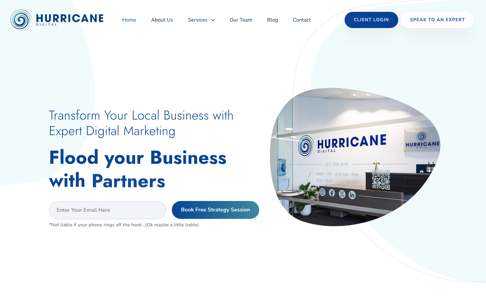
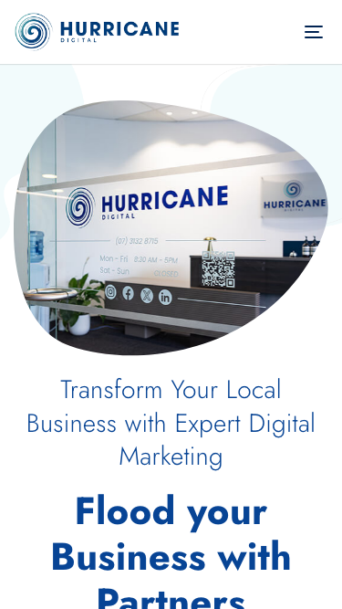

64/100 · moderate_candidate · 行业：roofing · 地区：Brisbane · Google 评价：4.7★ （183 条）
审计结论： audit_score=64 → moderate_candidate · weakest: visual 50, gbp 58 · fired: high_traction_old_site · 1 critical issues
已触发的 hard triggers：
high_traction_old_site
independent_https_site

The design features a clean, modern aesthetic with good typography, but it suffers from a critical disconnect between the visual branding (digital marketing) and the stated industry (roofing), alongside a confusing primary call-to-action.
新鲜度 8/10 · 信任度 6/10 ·
转化准备度 5/10 · 设计年代 modern
值得保留的优点： - The color palette (navy blue, teal, white) is professional and trustworthy. - The typography is clean, modern, and highly legible. - The layout is spacious with good use of whitespace, avoiding a cluttered feel.
Customers overwhelmingly praise specific staff members for tangible improvements in visibility, lead generation, and website performance, though one significant complaint highlights a disconnect between sales promises and actual ROI.
一致夸赞：
rapid improvement in google rankings ·
responsive and proactive communication ·
measurable increase in leads ·
personalized account management ·
effective website optimization
抱怨 / 短板： lack of measurable roi ·
difficult cancellation process ·
billing issues after cancellation ·
unmet sales expectations
可直接放上 redesign 后网站的 quote：
“getting us back on Google where we can actually be seen/found. I am back to getting calls & email inquiries” — Tracey, ★★★★★
放哪：Hero section proof of lead generation and visibility recovery
“He understands performance marketing properly and focuses on what actually drives leads and growth.” — Brady, ★★★★★
放哪：Services page to highlight strategic expertise over generic SEO
“the difference has been clear the value Hurricane Digital and Nash provide more than justifies the investment.” — Steven, ★★★★★
放哪：Pricing or About page to justify cost and demonstrate value
“He goes above and beyond, putting in extra work to ensure everything is properly setup.” — Ben, ★★★★★
放哪：Testimonials section to emphasize customer care and attention to detail
命中原因： phone hidden below fold or missing
命中原因： title=‘# Transform Your Local Business with Expert Digital Marketin’ contains-name=false contains-niche=false
tags
-2026-05-11-v1ollama-qwen3.6-27b-nothinkGoogle Places Place Details · most_relevant